Menu Sélection
58 €
- Mises en bouche
- Entrée au choix à la carte
- Délice de la sorbetière
- Plat au choix à la carte
- Dessert au choix
Sélection de vins « Découverte » : 30 €. Fromage à la place du dessert : + 5 €.
Cuisine française · Gembloux · depuis 2005
La cuisine de saison du chef Frédéric Dupont, servie en salle, en véranda ou sur la terrasse ensoleillée. Les grands classiques français, et une carte qui change avec les saisons.
Midi et soir · fermé le lundi
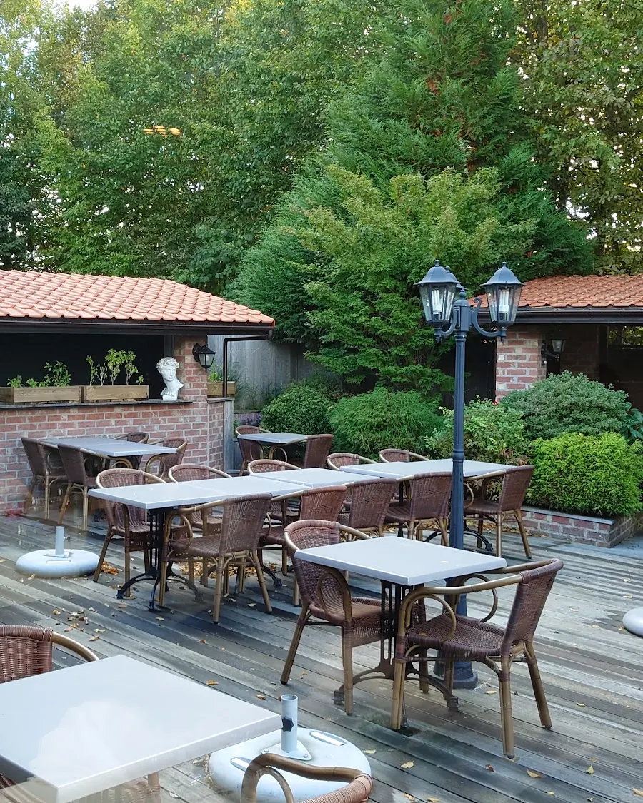
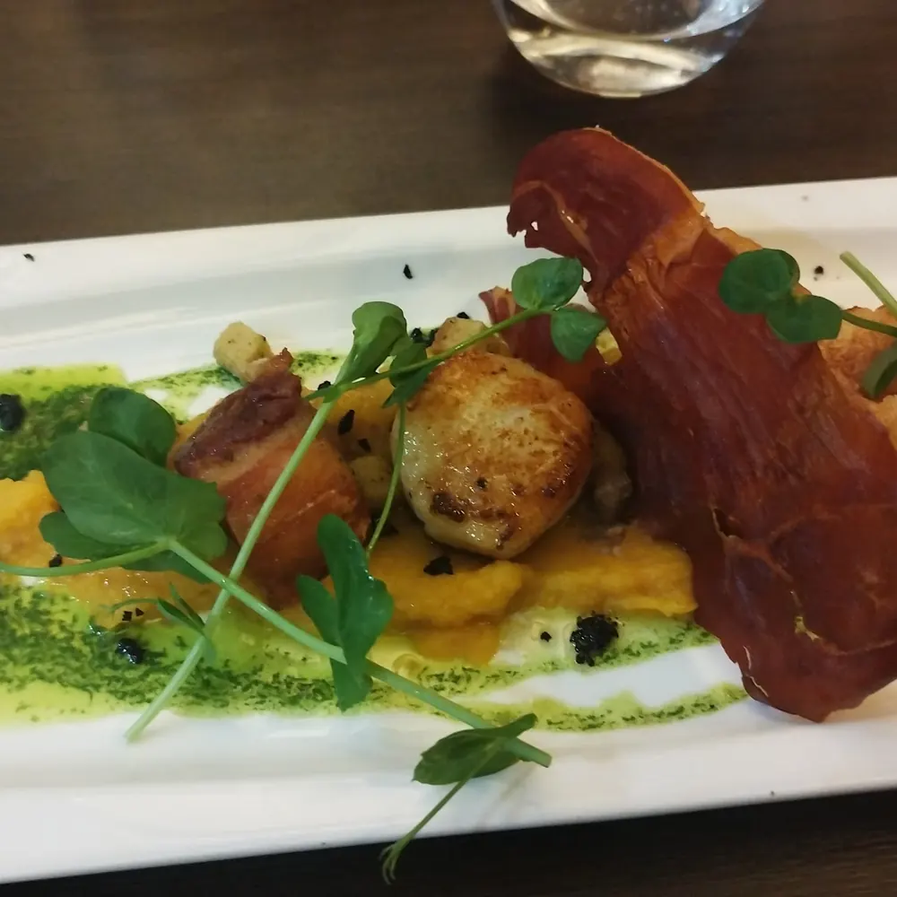
La maison
En cuisine, Frédéric Dupont, diplômé de l'école hôtelière de Namur, épaulé par trois cuisiniers : une cuisine respectueuse des traditions et tournée vers les saveurs nouvelles. En salle, une équipe dynamique et expérimentée.
Depuis 2005, la maison n'a cessé de s'embellir : un salon de réception, une salle de banquet, une véranda et une terrasse ensoleillée en été. Le chef n'utilise que des produits de première fraîcheur, quitte à retirer un plat de la carte.
« […] Une cuisine excellente, un lieu charmant, chaleureux. Le personnel est fantastique, accueillant, au petit soin […] »valerie d., avis Google, deuxième visite
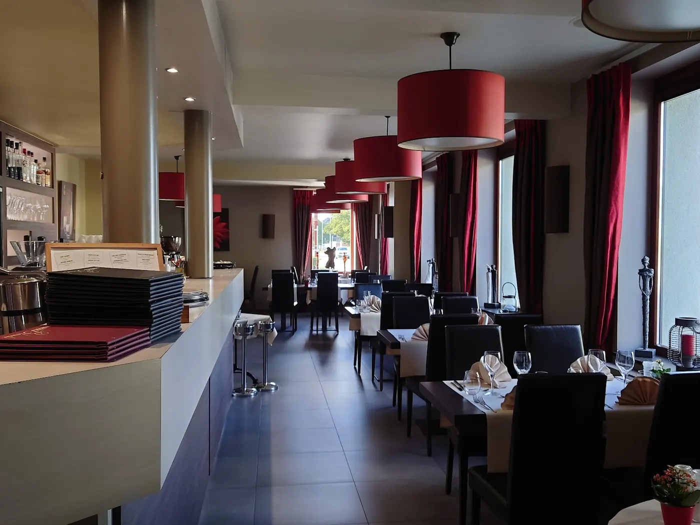
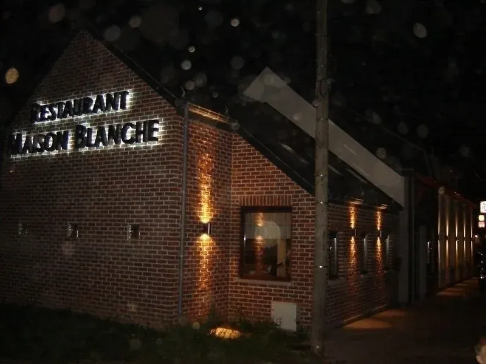
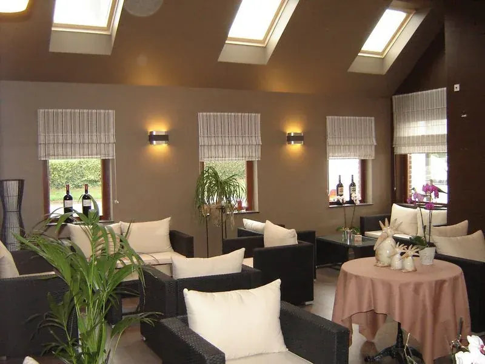
La carte du moment
Faisan, marcassin, biche, châtaignes, butternut : la carte suit la saison. Chaque service a son prix unique ; quelques plats portent un supplément ou une réduction, indiqués à côté.
Terrine de faisan aux éclats de pistacheconfiture d'oignons à l'orange et petits raisins, gel de pommes au Calvados, toasts chauds− 3 €
Crème de châtaignes à l'huile de truffedés de magret de canard fumé, mini-croûtons aux fines herbes ; existe en version végétarienne (− 3 €)
Cassolette de scampissauce crème chimichurri, brick lustrée à l'huile de basilic
Spaghettis en croquette carbonarachips de jambon fumé, citron et persil frit, coulis de tomate
Noix de Saint-Jacques snackéespoitrine de porcelet confite, mousseline de butternut, éclats de châtaignes, chips de serrano, huile de truffe blanche, coulis de basilic+ 2 €
Foie gras mi-cuit au Pineau des Charentespetits raisins, confit de figues, toasts chauds+ 2 €
Civet de marcassinpetits oignons grelots, lardons et champignons, pommes grenailles rissolées
Filet de faisan à la Brabançonnesauce fine champagne, croquettes maison, tombée de chou vert et bacon
Médaillon de filet de biche, sauce Arlequingratin dauphinois au reblochon, poêlée de champignons en brick croustillante+ 8 €
Magret de canard rôtisauce crème au caramel léger, pêches et airelles confites, pommes amandines
Dos de cabillaud « vapeur »tombée d'épinards et échalotes, mousseline de potimarron, sauce mousseline citronnée
Bar Victoria à la façon d'un waterzooi
Linguine à la stracciatellaVGlamelles de truffe noire, tomates cerises confites, basilic− 3 €
Filet pur de bœuf irlandais, 250 ggrillé, salade garnie, pommes frites+ 12 €
L'incontournable dame blancheà la façon du chef
Crème brûlée à la vanille Bourboncaramélisée, éclats de caramel
Nougat glacé aux fruits secs torréfiéscompotée chaude de figues fraîches et miel, coulis de framboise, tuile aux amandes
Tartelette coulante chocolat noir et mandarineglace vanille, crème anglaise
Tartelette des Sœurs Tatinflambée au Calvados (facultatif), glace vanille
Beignets de pomme Goldengel au Calvados, glace au lait d'amandes
Pièce montée glacée ou gâteau d'anniversairesur commande, à partir de 10 personnes+ 4 €
Une assiette de fromages d'ici et d'ailleurs et ses garnitures, pain aux noix. Ou la même, accompagnée d'un verre de Bourgogne pinot noir à 25 €.
16 €VG : végétarien. Le chef ne travaille que des produits de première fraîcheur : un plat peut manquer le jour de votre visite.Extrait de la carte en vigueur, relevé le 19 novembre 2026.
À table
Des assiettes dressées avec soin, photographiées à La Maison Blanche. « […] Plats délicieux et bien présentés […] », écrit Punzo A. après sa première visite.
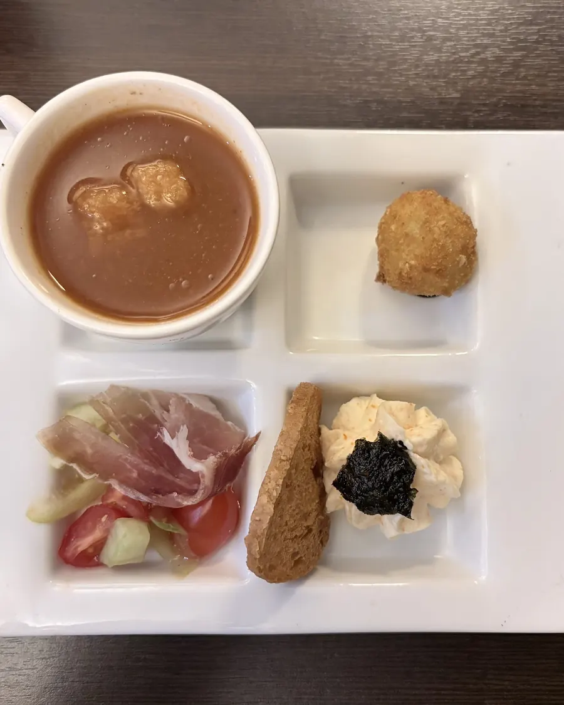
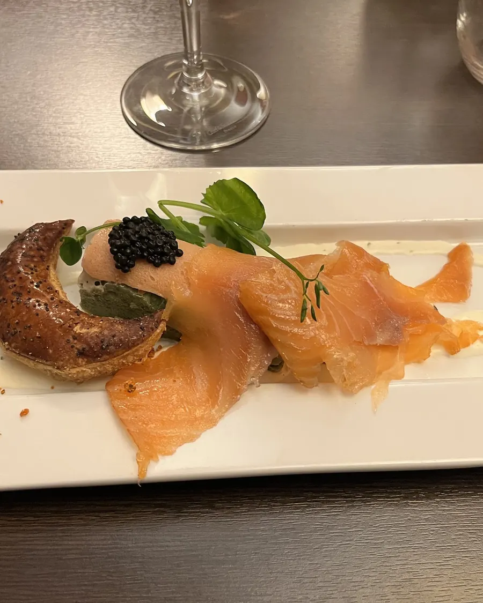
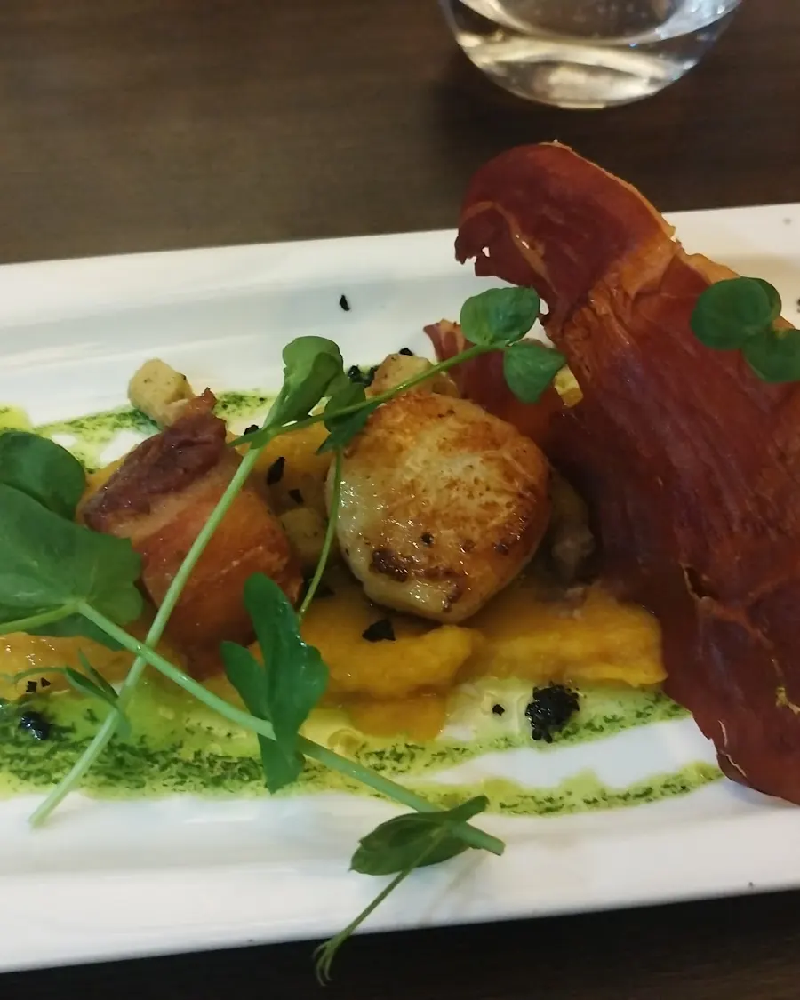
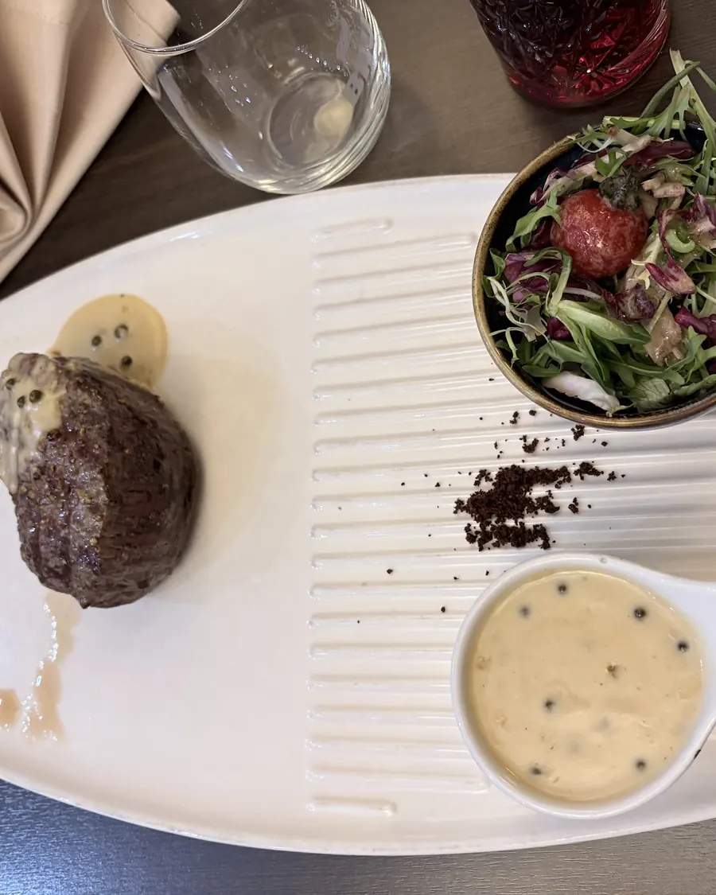
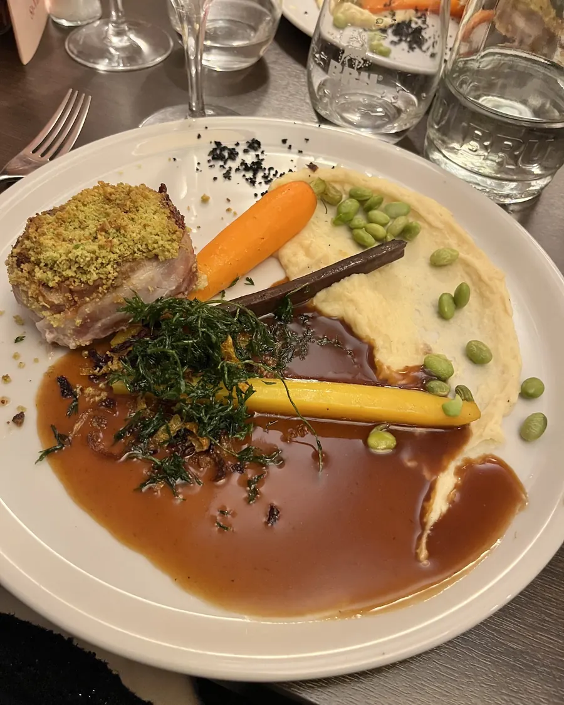
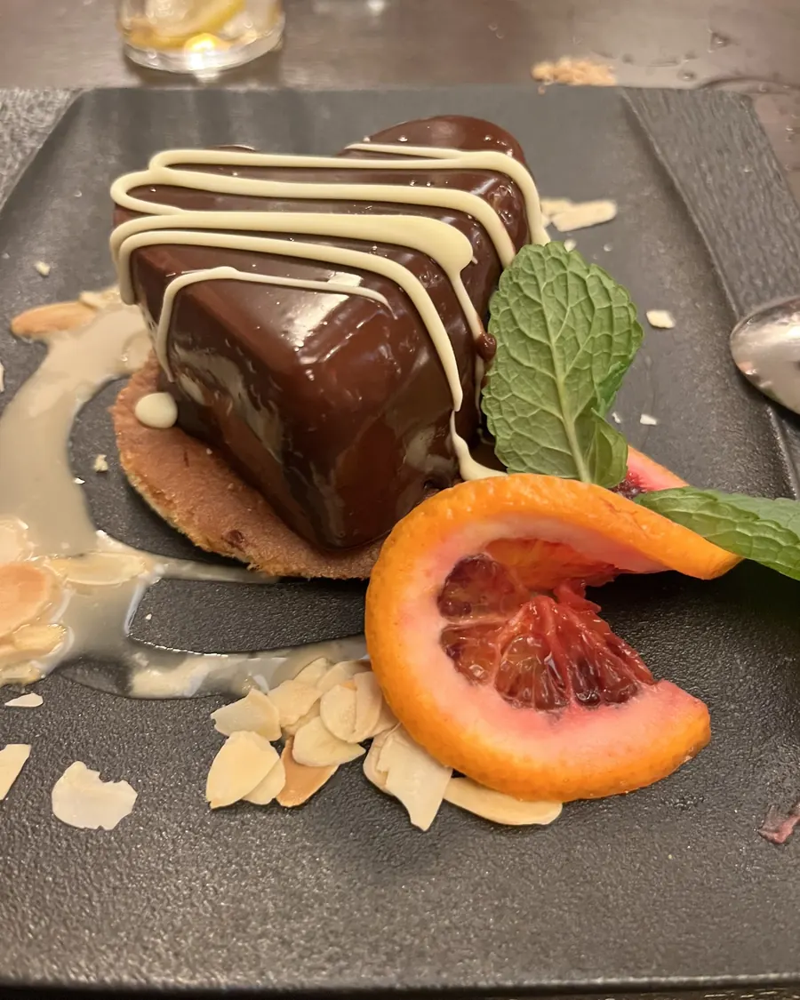
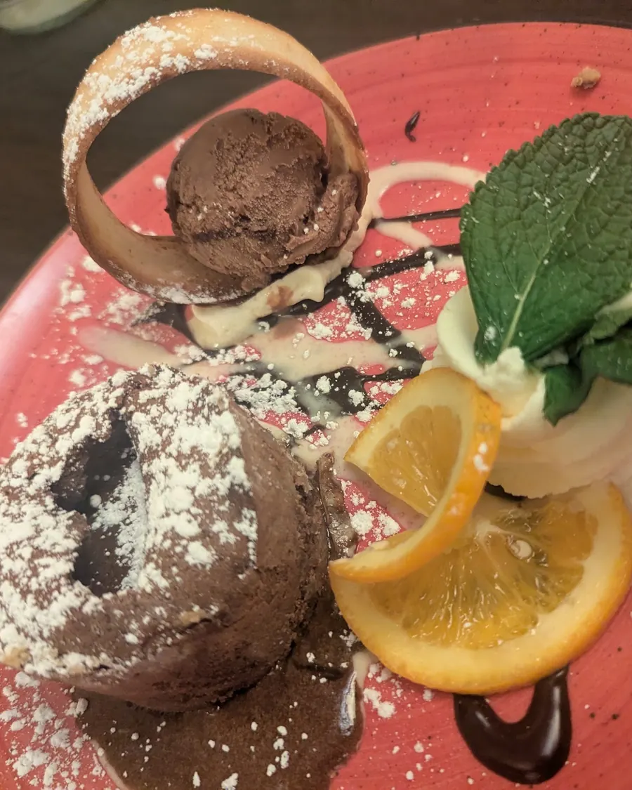
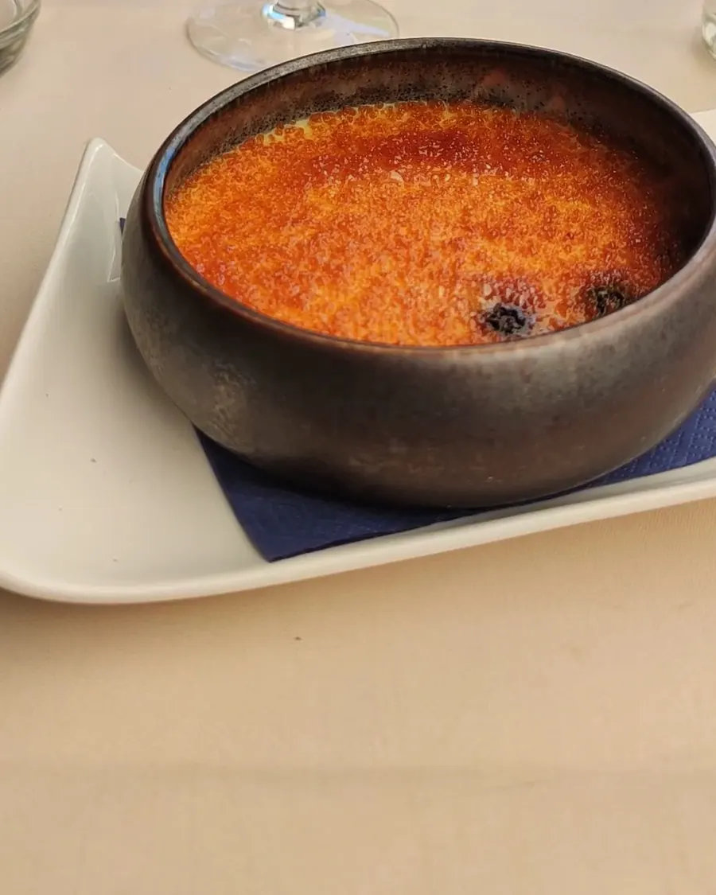
Faites glisser pour voir les assiettes
Avis
Ce que les clients écrivent sur Google après leur repas à La Maison Blanche.
Noël à La Maison Blanche
Un seul menu, servi le jour de Noël à midi, du cocktail du Père Noël à la bûchette vanille-framboise. La réservation est indispensable.
Fêtes et groupes
Anniversaire, repas de famille, déjeuner d'équipe : la maison a une pièce pour chaque tablée, et le gâteau se commande avec la table.
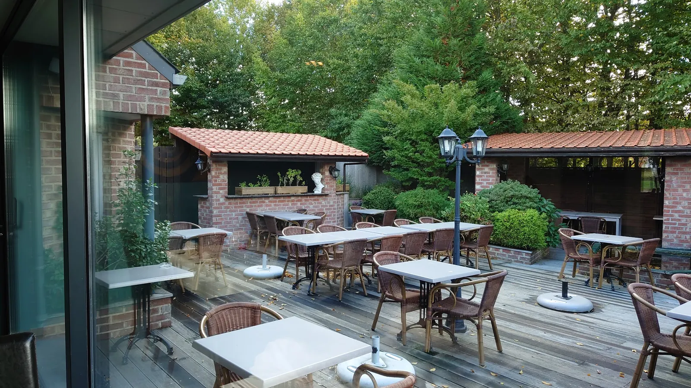
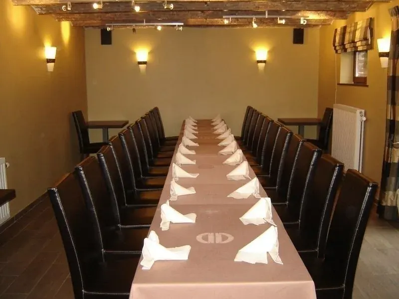
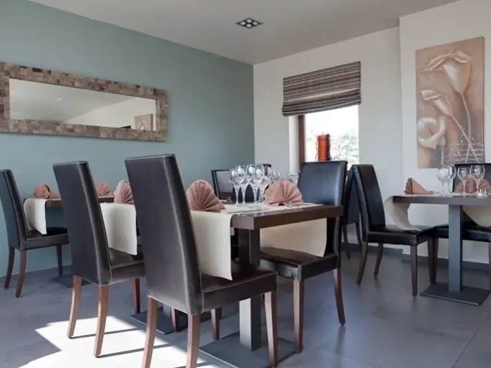
Pièce montée glacée ou gâteau d'anniversaire sur commande, à partir de 10 personnes.
Appeler le 081 61 20 85Le déjeuner d'affaires, du mardi au vendredi midi : 33 € les trois services.
Voir les menusRéserver
Le jour, l'heure, le nombre de couverts : la demande se fait en trente secondes, de jour comme de nuit.
Horaires et accès
| lundi | fermé |
|---|---|
| mardi | 11 h 30 – 14 h 30 |
| mercredi | 11 h 30 – 14 h 30 · 18 h 30 – 22 h 30 |
| jeudi | 11 h 30 – 14 h 30 · 18 h 30 – 22 h 30 |
| vendredi | 11 h 30 – 14 h 30 · 18 h 30 – 22 h 30 |
| samedi | 18 h 30 – 22 h 30 |
| dimanche | 11 h 30 – 14 h 30 |
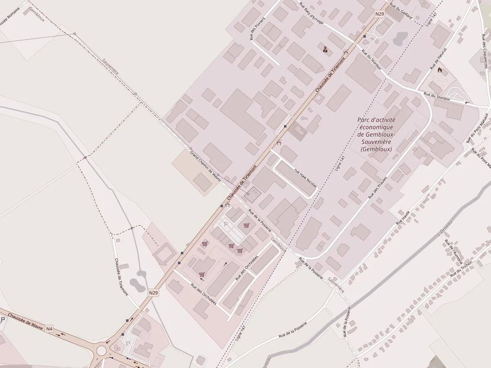
Itinéraire © OpenStreetMap« Le parking permet un stationnement aisé […] », note Marcelis J. dans son avis.
Sur la carte ou un événement : écrire à la maison ou appeler le 081 61 20 85.